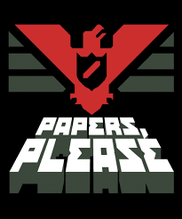
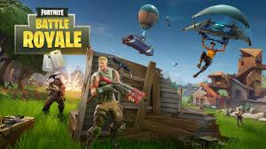

Juego 1: |
Juego 2: |
Juego 3: |
|
|---|---|---|---|
| Nombre | Undertale | Papers please | Fortnite |
| Imagen |  |
 |
|
| Descripción | Undertale es un juego de rol independiente creado por Toby Fox. Destaca por su narrativa única, donde las decisiones del jugador afectan directamente la historia y los destinos de los personajes. Tiene un sistema de combate innovador que permite elegir entre luchar o mostrar misericordia a los enemigos, promoviendo la empatía y la creatividad. Además, su estilo retro y su banda sonora memorable hancontribuido a su gran popularidad. | Papers, Please es un juego de simulación desarrollado por Lucas Pope en el que el jugador asume el rol de inspector de inmigración en un país ficticio y totalitario llamado Arstotzka. El objetivo es revisar documentos de los visitantes y decidir quién puede entrar o no, equilibrando las reglas oficiales con la moral personal. El juego destaca por su crítica social y política, así como por la tensión constante entre cumplir órdenes y tomar decisiones éticas. | Fortnite es un juego multijugador en línea desarrollado por Epic Games, famoso principalmente por su modo “Battle Royale”. En él, hasta 100 jugadores compiten para ser el último en pie en un mapa que se reduce progresivamente. Combina disparos, construcción de estructuras y elementos estratégicos, ofreciendo partidas rápidas y dinámicas. Fortnite también es conocido por sus eventos en vivo, colaboraciones con la cultura pop y constante actualización de contenido, manteniendo a los jugadores enganchados. |